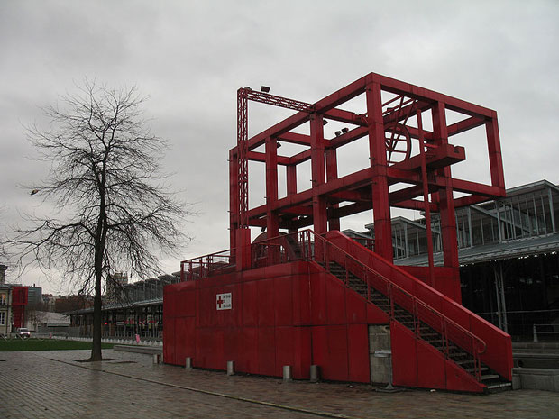

At last count, there were over 83 museums in Paris. (And that's not including the Cinematheque Francaise which for some reason isn't included in any of the official tourist information listing of National, Private, and City museums.) There are probably a few small private museums that fall below the radar, but not to worry. Those are the museums that will find you rather than vice-versa. No matter what's on your must-see list, there are bound to be tough decisions to make when your time is limited.

The Parc de la Villette is a park in Paris at the outer edge of the 19th arrondissement, bordering the Boulevard Périphérique, which is a ring road around Paris, and the suburban department of Seine-Saint-Denis.
The park was designed by Bernard Tschumi, a French architect of Swiss origin, who built it from 1984 to 1987 on the site of the huge Parisian abattoirs (slaughterhouses) and the national wholesale meat market, as part of an urban redevelopment project. The slaughterhouses, built in 1867 on the instructions of Napoléon III, had been cleared away and relocated in 1974. Tschumi won a major design competition in 1982/83 for the park, and he sought the opinions of the deconstructionist philosopher Jacques Derrida in the preparation of his design proposal.